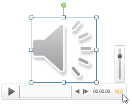

Final Project Brief

Project Summary
I decided to go with my Every Picture project by adding visual designs and improving the user experience.

Project Description
For my "Every Picture" project, I've designed a "zoom-by-scroll" effect for my collection of stuffed animals, aiming to give users the feeling of viewing these animals as they would in a museum. Each animal is highlighted and introduced in turn. However, the current design simply displays the animals, with user interaction limited to scrolling and sliding.
To enhance engagement and interactivity, I'm considering adding playful elements, such as cute emojis cascading from the top of the page when users scroll to each animal, creating a delightful surprise. Additionally, I'm thinking of incorporating a retro, PowerPoint-style sound button. When clicked, this button would play the corresponding animal's sound, adding an auditory dimension to the experience. On the usability front, I realized that the only way to switch between animals is through continuous scrolling. To streamline navigation, I plan to introduce buttons at the bottom of the page. Users can click these to jump directly to a specific animal.
Expert Feedback
To refine both the user experience and visual design, I intend to consult a design mentor who has previously guided me on a project. Furthermore, I'm considering reaching out to my designer group chat to see if anyone is interested in conducting usability tests for my project. I might also seek feedback on the coding aspect from a coworker who is a front-end developer at the company where I interned.